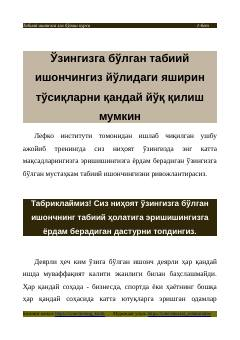

TIO'z-o'ziga bo'lgan ishonchni tiklash va cheklovchi e'tiqodlarni yengish bo'yicha amaliy qo'llanma.
Ushbu kurs o'z-o'ziga bo'lgan ishonchni shakllantirish va maqsadlarga erishish yo'lidagi to'siqlarni bartaraf etishga bag'ishlangan. Lefko instituti tomonidan ishlab chiqilgan ushbu trening cheklovchi e'tiqodlardan xalos bo'lish va qo'rquvlarni yengish usullarini o'rgatadi.